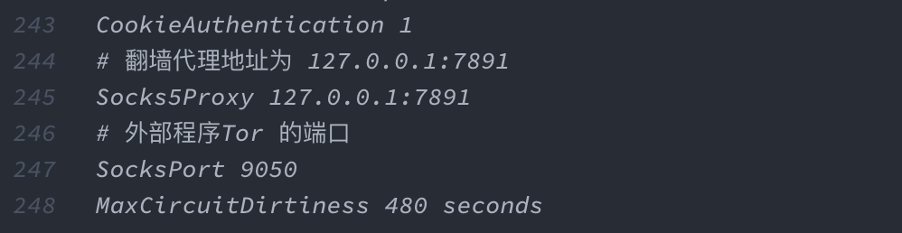
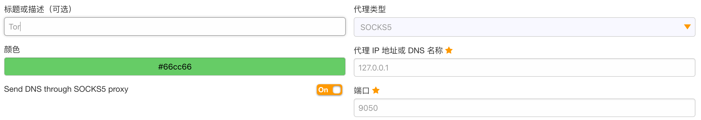
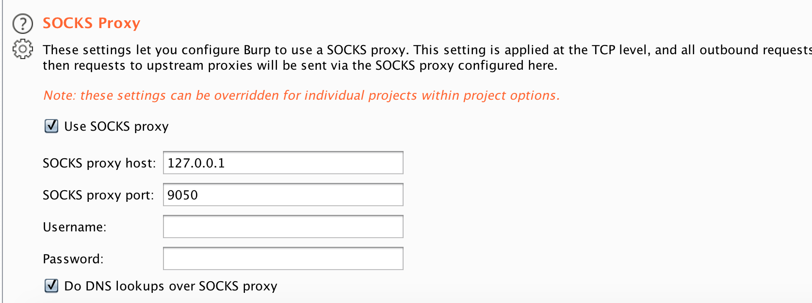
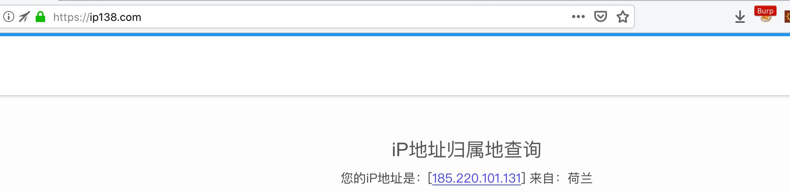

Tor主要用来访问匿名网络也就是已.onion结尾的域名，当然也可访问某些正常的网站如google、twitter等，但并不推荐如此做；今天要说的是在Penetration中如何利用Tor网络对目标进行渗透，防止被溯源和审查等，隐藏攻击者身份和IP地址
官方解释：Tor是一个您能运行在您的电脑上，保护您在互联网上安全的程序。 它会将您的通信在一个由多个中继站组成的分散网络内不断传递，这些中继站被来自世界各地的志愿者们运营，并以此来保护您：这阻止了某些人通过您访问了哪些网址来得知您的网络链接，也防止了您访问的网站获取您的地理位置。 这些由志愿者搭建的中继被成为 Tor 网络。
0x01 访问Tor的方式
1、直接使用Tor Browser浏览器，内置Tor Project加上Firefox浏览器–推荐
2、源码安装Tor Project，然后配合其它浏览器使用–Geek
0x02 安装Tor Browser浏览器
下载地址：
Windows：https://www.torproject.org/dist/torbrowser/9.5.3/torbrowser-install-win64-9.5.3_zh-CN.exe
Mac os：https://www.torproject.org/dist/torbrowser/9.5.3/TorBrowser-9.5.3-osx64_zh-CN.dmg
之后的安装过程就和其它程序一样了，这里不在赘述
0x03 安装Tor Project
Mac OS：brew install tor
Windows：https://www.torproject.org/dist/torbrowser/9.5.3/tor-win32-0.4.3.6.zip
0x04 Tor 配置文件
Mac OS:/usr/local/Cellar/tor/ :Tor的安装路径/usr/local/etc/tor/torrc :Tor的配置文件
Windows:解压后的存放路径 : Tor的安装路径同路径下tor/torrc :Tor的配置文件
Mac：在下面路径/usr/local/etc/tor找到文件torrc.sample，拷贝一份命名为torrc
Windows：双击tor.exe后会生成torrc文件，然后再编辑
常用配置的参数：
| 参数 | 作用 | |
|---|---|---|
| Socks5Proxy | 前置 Socks 代理端口 | |
| HTTPProxy | 前置 HTTP 代理端口 | |
| HTTPSProxy | 前置 HTTPS 代理端口 | |
| SocksProt | 外部程序访问 Tor 的端口 | |
| MaxCircuitDirtiness | 自动切换 ip 的时间间隔 |
我的配置：
0x05 确认是否接入Tor网络
启动Tor：
Mac：tor 命令
Windows：双击tor.exe
配置Tor生成的本地代理

访问 https://check.torproject.org/

0x06 配合Burp Suite使用
在Burp Suite中配置tor本地代理地址，浏览器中配置bp的代理
User options->Connetctions
OK,可以开始使用了

0x07 最后
使用Tor的注意事项⚠️：
1、请勿将您的手机在 Tor 上用于两步验证
2、不要在 TOR 之外操作用户帐户
3、不要发布有关您的任何个人信息
4、不要通过 TOR 发送未加密的数据
5、不要忘记删除 cookies 和本地网站数据
6、请勿将 TOR 用于 Google 搜索
7、不要在 TOR 上打开 HTTP 网站
8、不要同时使用 Tor 和不使用 Tor 访问同一台服务器